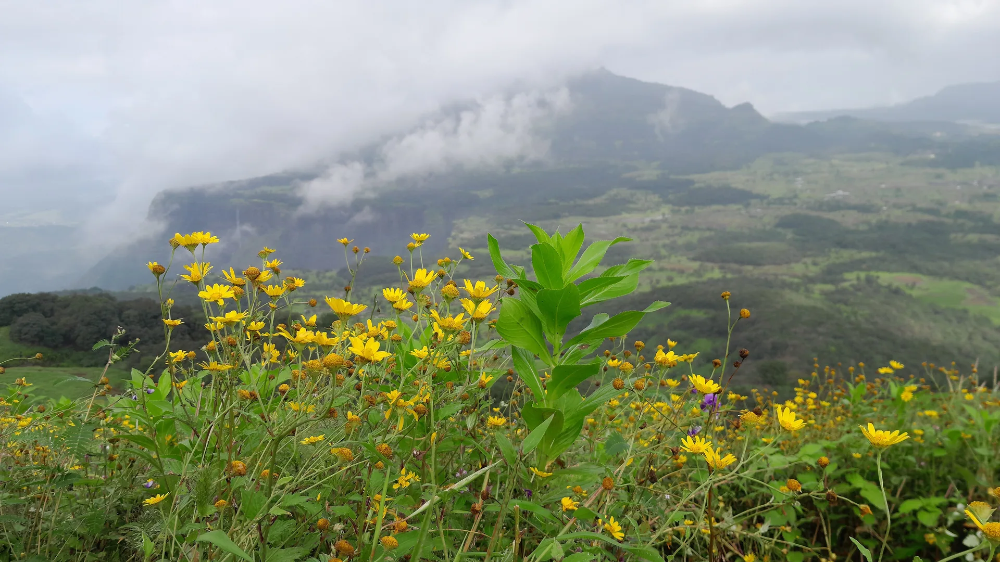

02Day 2 · Samradkm 0.1
Into the gorge
8amStart · After breakfast
The group reaches Samrad in the small hours and rests. After breakfast the walk drops straight into the gorge.

Photo: Rupaksane, CC BY-SA 4.0सांदण दरी · Ahilyanagar, Western Ghats
The trek in one line, and what you can do with it.
A trek that goes down, not up: boulders, deep pools and rappels through a water-cut canyon.
4 stops on the map, then the climb. Scroll the stops and the map follows.
02Day 2 · Samradkm 0.1
8amStart · After breakfast
The group reaches Samrad in the small hours and rests. After breakfast the walk drops straight into the gorge.
02Day 2 · The Valley of Shadowskm 1.5
~200ftWalls · Deep
The walls close in: about 200 ft deep and in places 3 m apart, so little sunlight reaches the floor.
02Day 2 · Campkm 4.8
3pmValley floor · Lunch by the river
By about 3 pm the gorge opens onto the valley floor. Lunch by the river, then on to camp by 5 pm.
03Day 3 · Dehenekm 6.7
~2hWalk · Flat
A flat walk of about two hours to Dehene, where vehicles wait for the drive back to Kasara.
Best in Oct–Mar.
Dark: the months the trek’s sources call its best. Mid: possible. See all treks in October.
 Photo: Rupaksane, CC BY-SA 4.0
Photo: Rupaksane, CC BY-SA 4.0
Base prices from 4 operators’ own pages, per person. GST and travel are often extra. Treqz sells nothing.
₹2,299–3,000
The practical things, then the questions people ask.
One thing from each part of the packing list, so nothing big is missed. The full list, with where to rent and the daily rates, is on the 3D page.
The full packing list →


There is no network around the valley, and fog and rain are common. If you drive yourself, you can't reach the group by phone.
Treks and TrailsSamrad has parking. Self-drivers are guided to Samrad through Karole ghat by locals.
Treks and TrailsTreks and Trails drives groups from Dehene to Asangaon station, not back to Kasara.
Treks and TrailsThere are no toilets in the gorge. Use the ones in Samrad before you start, or in Dehene at the end.
Treks and TrailsCamps give plain well water. Buy purification tablets at a chemist before you go.
Treks and TrailsThere is a weight limit for rappelling. Email the operator to check before you book.
Treks and TrailsAbout 6.8 km of walking over 3 days on the trail.
The highest point is Canyon, about 10 m above the start.
Its sources grade it Easy.
Oct–Mar.
₹2,299 to ₹3,000 per person: base prices from 4 operators' own pages. GST and travel are often extra.
There is no network around the valley, and fog and rain are common. If you drive yourself, you can't reach the group by phone.
Extra set of clothes, Sweater, Winter clothes, Trekking shoes, Haversack, Torch and spare batteries, Sleeping bag and mat, Bedsheets. The full list is on the 3D page.
Yes: Dec–Feb is among its best months.
Its sources grade it Easy and it takes 3 days on the trail, with a highest point of Canyon.
Kalsubai, Harishchandragad, Rajmachi, Rajgad to Torna, Kudremukh.


Treks in October · Treks in November · Treks in December · Treks in January · Treks in the Western Ghats · Beginner Treks in the Western Ghats · Winter Treks in India · Easy Treks in India for Beginners · 3 Day Treks in India · Treks in Ahilyanagar, Maharashtra · Sandhan Valley vs Kalsubai · Sandhan Valley vs Harishchandragad · Sandhan Valley vs Rajmachi · Sandhan Valley vs Rajgad to Torna · Free trek finder · All treks in 3D